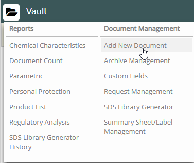
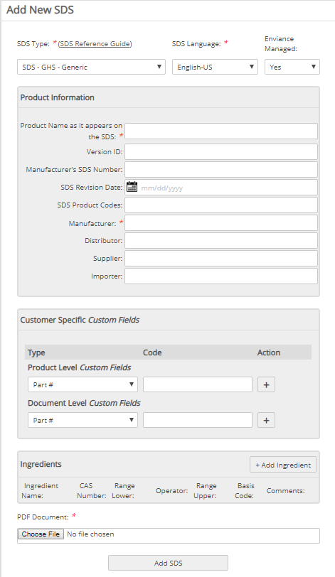

If a product you need does not already exist in Vault, you can add a new product to your Vault through the Add a Product page.
Before adding a product, you should be sure that the product does not already exist, so that you do not accidentally duplicate a product you already have. For example, if you misspell the product name, you can potentially create a duplicate product in your Vault.
To prevent creating a duplicate product in your Vault:
If you find the product you are looking for, click the Action icon and choose Add to Library.
From the Document Management menu, you can view Request Management (list of new products added and their status through QC), add a new product, define custom document fields, create summary sheets and labels, and archive or retire documents.
To add a new product:
Click the folder icon next to the Vault header. Under Document Management select Add New Document.

The Add New Product page displays:

Choose a Document Type and Document Language from the lists.
Note: Vault does not translate documents into the language you choose from the Document Language list. Instead, Vault associates the document with the language specified. If you require documents in a language other than English, contact your CSM.
Choose Enviance Managed, Yes or No.
The document you provide for the product will become immediately available in your Vault location for viewing and printing only.
If you choose Yes, your Customer Service Manager (CSM) then initiates a process to create an IntelligenTEXT version of the SDS, which will make the product information available for searching, analysis and reporting. Managed products are revised and maintained by the CSM.
If you choose No, the document will only be available viewing and printing. Non-managed documents are not maintained by the CSM.
Note: Managed SDS are also revised and maintained by the CSM. Non-managed documents are not updated or maintained by the CSM.
Specify the Manufacturer and any other information needed.
It is recommended that SDS Revision Date and Product Code/SDS number are entered.
If you chose to have the document managed in the system, you can monitor the status of your requests from the Request Management page.
To check the status of your document requests:
Click the folder icon next to the Vault header. Under Document Management select Request Management.
The Request Management page shows the status of current requests.
Note: The State column reflects the status of your request. We recommend you monitor the status for requests labeled Exception. A document in Exception state requires additional steps to be managed in the system. Additional information about the request is also displayed in the Comments column to help you with further actions.